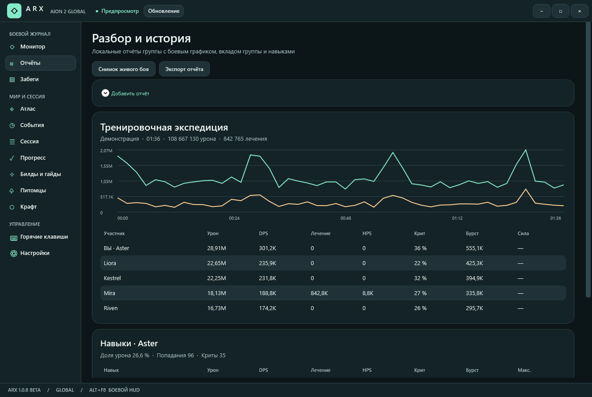
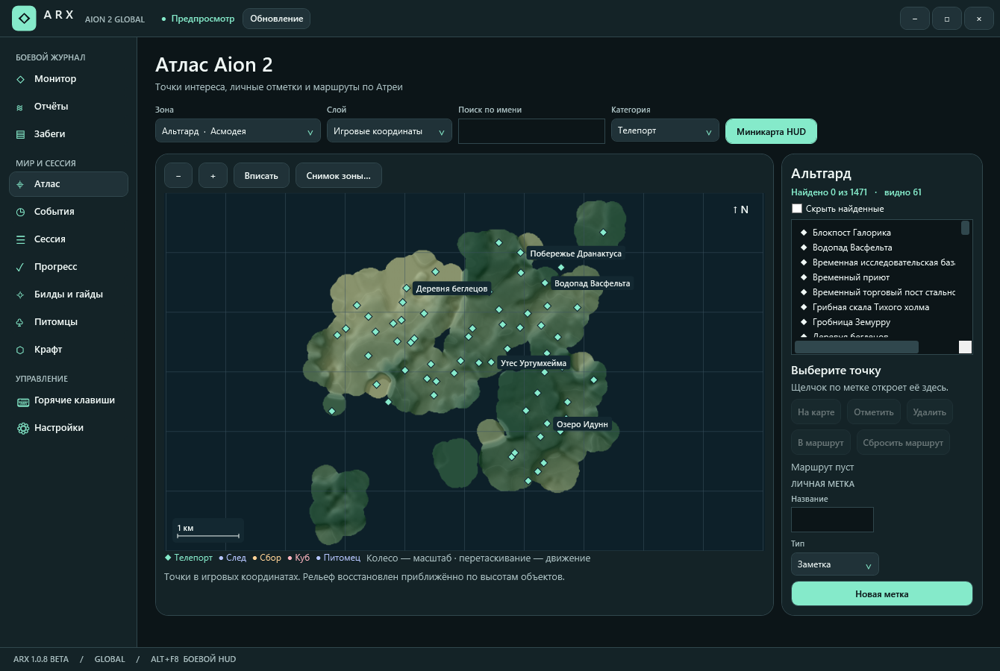
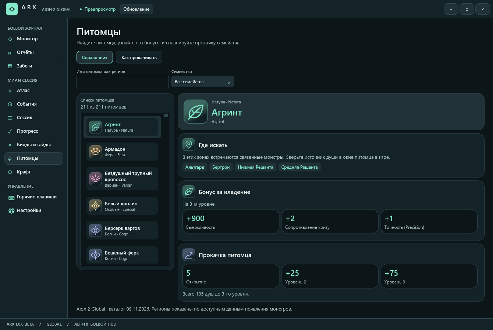
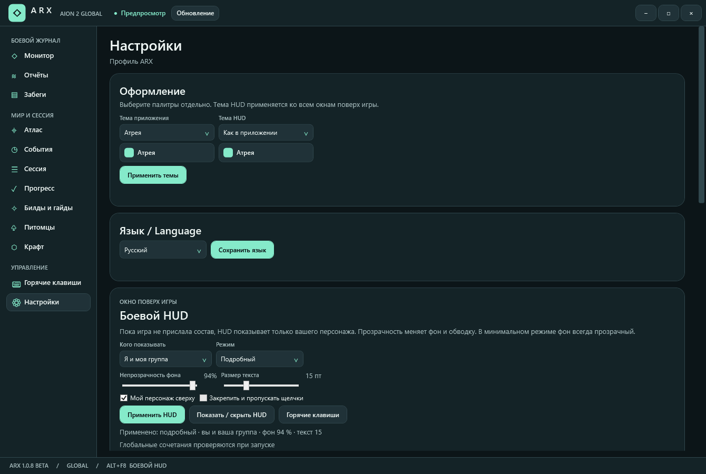

01 / МОНИТОР
DPS и боевой HUD
Смотрите личный и групповой DPS, общий урон и вклад участников. Настройте HUD на себя или всю группу, выберите плотность и прозрачность. Удерживайте Alt, чтобы управлять закреплённым окном мышью.
AION 2 GLOBAL / EU · NA
Помощник для Aion 2 Global
Следите за DPS в бою, разбирайте попытки на боссах и отмечайте маршруты в атласе Атреи.
Загрузок ARX на GitHub:
РЕЛИЗЫ ARX WINDOWS x64 GPL-3.0

ВОЗМОЖНОСТИ
01 / МОНИТОР
Смотрите личный и групповой DPS, общий урон и вклад участников. Настройте HUD на себя или всю группу, выберите плотность и прозрачность. Удерживайте Alt, чтобы управлять закреплённым окном мышью.
02 / ОТЧЁТЫ
Выделяйте интервал на графике боя или находите пик за 5 секунд. В полном отчёте доступны урон по навыкам, лечение, HPS, критические удары и атаки со спины.
03 / ЗАБЕГИ
ARX автоматически записывает поддерживаемые экспедиции, включая Пещеру Крао и Драупнир. Открывайте отдельные попытки, сравнивайте средний DPS двух забегов и экспортируйте отчёты в JSON.
МИР И СЕССИЯ



СПРАВОЧНИК

НАСТРОЙКИ
ПЕРВЫЙ ЗАПУСК
Нужна Windows x64. .NET входит в установщик. Для портативного запуска распакуйте ZIP целиком.
Если Npcap отсутствует, установщик ARX предложит установить драйвер. Для портативной версии установите его отдельно. Откройте ARX до входа персонажем или смените локацию, если уже в игре.
Переведите игру в оконный режим без рамки. Alt + F8 включает боевой HUD, Ctrl + Alt + F10 открывает миникарту.
Для обновления установленной версии нажмите «Обновление» рядом со статусом клиента. Портативную версию обновляйте распаковкой нового ZIP целиком. Для установки Npcap на компьютер, где ARX уже есть, закройте приложение и запустите установщик вручную.
Аккаунт ARX не требуется. Боевые отчёты хранятся в локальном профиле. Описание и скриншоты сверены с ARX 1.0.8 beta.
ИСТОРИЯ ВЕРСИЙ
ARX 1.0.8 BETA
ARX 1.0.7 BETA
ARX 1.0.6 BETA
ARX 1.0.5 BETA
ARX 1.0.4 BETA
ARX 1.0.3 BETA
ПОЛЕЗНЫЕ ССЫЛКИ
Последний релиз ARX для Windows x64
Руководство по ARX в сообществе Steam